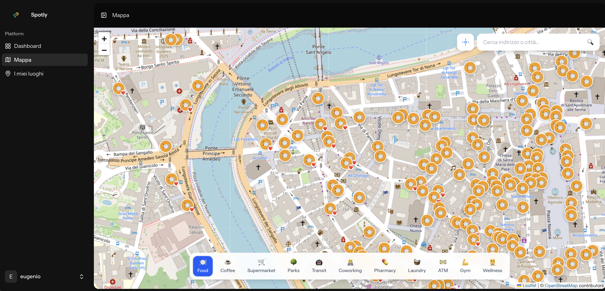

I Built a Map App Because Google Maps Stopped Showing Me the City
April 2026 · Eugenio Giusti

You arrive in a new city. You open Google Maps, search for "coffee" or "lunch", and the first page is basically a list of places that paid to be there. Sponsored. Promoted. Rated by people who visited once, took a photo, and left. Tourist traps with four stars because tourists don't know any better yet.
What you actually want is to find where the neighborhood regulars go. The café where locals work on laptops in the morning. The lunch spot that doesn't have a sign in English out front. The park that isn't on a postcard. That information exists — it's just buried under an algorithm that has no interest in giving it to you for free.
That frustration is where Spotly came from.
What Spotly Is
Spotly is an open source map app built for slow travelers — people who spend weeks or months in a place rather than ticking sights off a list. It's designed to help you find where locals actually eat, work, and spend time, without ads, without sponsored results, and without handing your location history to a corporation in exchange.
The underlying data comes entirely from OpenStreetMap, which is free, community-maintained, and covers the world with surprisingly good detail. Spotly queries that data in real time through the Overpass API, so what you see on the map reflects what the OSM community has actually mapped — not what a business paid to promote.
I built it because I needed it. I've spent time working remotely from different cities, and every time I land somewhere new the first hour is spent trying to figure out basic things: where can I find a decent coffee? Is there a coworking space nearby? Where are the parks? Google Maps works, technically, but it's optimized for tourism and commerce, not for the kind of low-friction, daily-use exploration that slow travel actually requires.
How It Works
The app is centered around a map with toggleable category layers. You can turn on Food, Coffee, Coworking, Transit, Parks, or a handful of other categories depending on what you're looking for. Each layer pulls POIs from OpenStreetMap relevant to that category, drops pins on the map, and lets you explore without committing to a search query. Sometimes you don't know what you're looking for until you see it on a map.
Clicking a pin opens a POI card with the information OSM has available: name, opening hours if mapped, address, and a direct link to open directions in your preferred navigation app. Nothing elaborate — just the data you'd actually want before deciding whether to walk somewhere.
You can save places with personal notes. If you find a café that works well for long sessions — good wifi, not too loud, doesn't kick you out after one coffee — you save it with a note so you can find it again tomorrow. It's a small thing, but it's the kind of small thing that makes a city feel less anonymous after a few days.
There's also a community tagging layer. Users can add tags to places: laptop_friendly, quiet, budget_friendly, tourist_trap, locals_only. These aren't reviews — they're quick signals that help you calibrate expectations before you walk in. A place tagged tourist_trap isn't necessarily bad, it just tells you what kind of crowd to expect. A place tagged laptop_friendly tells you something that no star rating captures.
The UI is multilingual from the start, because slow travel is inherently international. The people who'd actually use an app like this are scattered across a dozen languages.
Why These Technologies
The stack is Laravel 12 on the backend, Vue 3 on the frontend, connected through Inertia.js, with Leaflet.js handling the map rendering and OpenStreetMap tiles.
The decision not to use the Google Maps API was deliberate. Google Maps is excellent software, but it's also a product with pricing that can spike unexpectedly once you scale, and terms of service that constrain what you can do with the data. For an open source project meant to be self-hostable and free to use, that's not a foundation worth building on.
OpenStreetMap is the opposite: free to use, community-driven, and genuinely good coverage in most of the world. The data quality varies by region, but for the cities where slow travelers tend to go — Europe, Southeast Asia, Latin America — it's often comparable to or better than proprietary alternatives. And because it's maintained by contributors who actually live in those places, it sometimes has detail that commercial maps miss entirely.
Leaflet.js is lightweight and well-suited to the kind of map interactions Spotly needs. Vue 3 with Inertia keeps the frontend reactive without the overhead of a fully decoupled SPA architecture. Laravel handles the API, authentication, and saved-places logic. It's a stack I know well and can move quickly in, which matters more for a project like this than chasing something new.
What's Next
Spotly is under active development. The core features are working — the map, layers, POI cards, saved places, and community tags are all functional — but there's still a lot I want to build. Better offline support, more tag categories, a way to share a curated list of spots with someone else, deeper integration with OSM contributor tools. Some of that is planned; some of it will come from people using the app and telling me what's missing.
The project is fully open source and I genuinely welcome contributions. Whether that's code, new tag suggestions, translations, or just opening an issue to say something's broken — all of it helps. A map app built for travelers works better when it's shaped by people who actually travel.
If you spend time in cities you don't know well, or if you're building something adjacent and want to talk about the stack, or if you just want to tell me the feature you'd add first — I'd like to hear from you. The GitHub repo is the best place to start. There's also a demo video if you want to see it in action before reading any code.